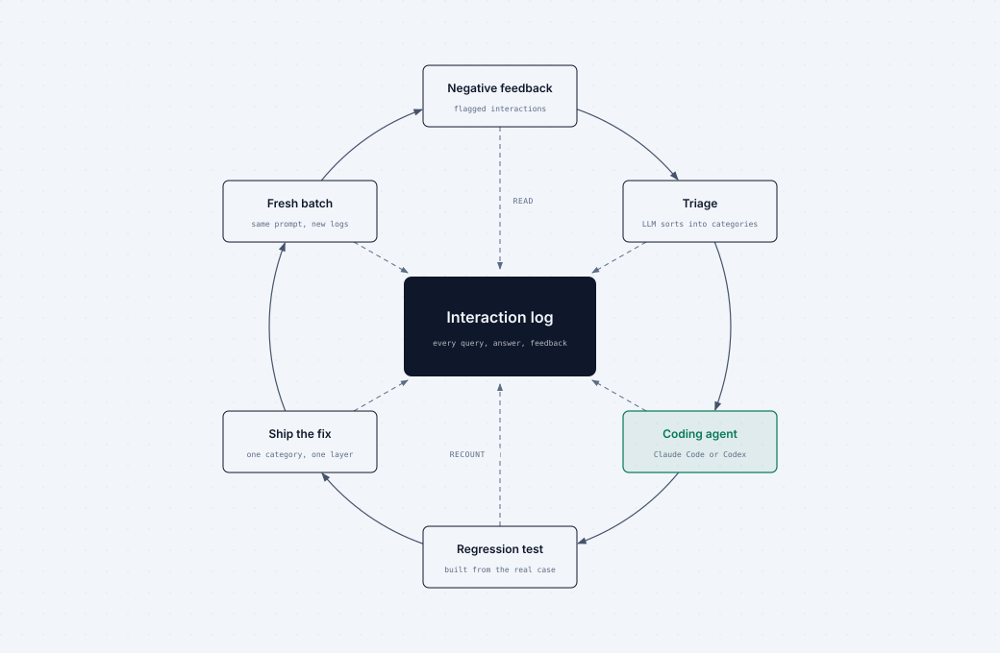
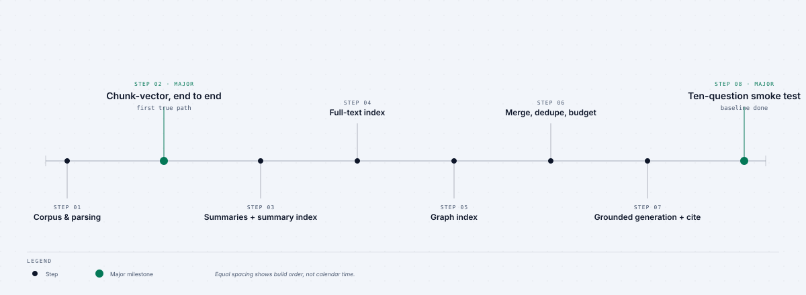

Formation continue · 01 · Boucle d’amélioration en production
Transformez chaque interaction RAG en une meilleure prochaine version
Instrumentez l’application, écoutez les utilisateurs, puis donnez à Claude Code ou Codex des preuves réelles — pas une vague demande de « rendre le RAG meilleur ».
Le gain concret d’aujourd’hui
Interaction → journal → retour utilisateur → analyse par un agent → plan d’amélioration → correctif délimité → nouvelles preuves. Le résultat est un plan défendable, pas une collection de suppositions.
1 · Journalisez chaque interaction avant de régler quoi que ce soit
Pour chaque réponse, enregistrez un identifiant d’interaction stable, l’utilisateur et le point d’entrée, la question exacte, les paramètres de la requête, les documents récupérés par canal, le contexte final, la réponse, les citations, la latence, le coût et les erreurs.
Une mauvaise réponse sans sa trace est une anecdote. Une mauvaise réponse avec sa trace est un cas d’ingénierie.

2 · Associez le retour utilisateur au même enregistrement
Ajoutez un pouce levé et un pouce baissé sous chaque réponse, avec un commentaire optionnel. Réécrivez la note, le commentaire et l’horodatage sur cet identifiant d’interaction. Le retour utilisateur indique quels échecs comptent ; le journal indique ce que le système a réellement fait.

3 · Confiez de vrais journaux à Claude Code ou Codex
Prélevez 20 à 30 lignes ayant reçu un retour négatif. Anonymisez les données sensibles, puis fournissez la requête, les résultats par canal, le contexte, la réponse, les citations, la latence et le commentaire. Demandez à l’agent de classer chaque échec en retrieval_miss, ranking_miss, unfaithful_answer, over_refusal, under_refusal, ou followup_lost.
Analysez ces interactions ayant reçu un retour négatif.
Pour chacune, nommez une classe d’échec et citez la preuve dans le journal.
Regroupez les schémas récurrents. Ne proposez pas encore de correctif.
Si la preuve est insuffisante, indiquez quel champ du journal manque.
4 · Demandez un plan, puis délimitez un seul correctif
Redonnez le lot classé à Claude Code ou Codex. Exigez un plan hiérarchisé qui relie chaque changement à sa preuve, à la couche responsable, au mouvement de métrique attendu, à un cas de non-régression et à une méthode de vérification. Commencez par le correctif le plus petit et à fort impact.
À partir des journaux classés, proposez un plan d’amélioration RAG hiérarchisé.
Pour chaque élément : preuve, couche responsable, changement, risque, critère d’acceptation, test de non-régression et vérification sur des journaux frais.
Ne modifiez pas les canaux de récupération non concernés ni le prompt de génération.5 · Améliorez dans un ordre qui préserve les preuves

- Rendez d’abord les journaux et les retours utilisateurs fiables.
- Corrigez une classe d’échec mesurée dans sa couche responsable.
- Ajoutez un cas de non-régression tiré d’une interaction réelle.
- Déployez le changement délimité.
- Relancez la même analyse sur des journaux frais et comparez les décomptes.
Livrable
Un plan d’amélioration RAG hiérarchisé, relié à des preuves de production, avec un cas de non-régression par correctif proposé et une étape explicite de réanalyse après la mise en production.
Prochaine action : ajoutez le journal d’interactions et le contrôle de retour utilisateur avant de passer une heure de plus à régler des prompts ou des embeddings.